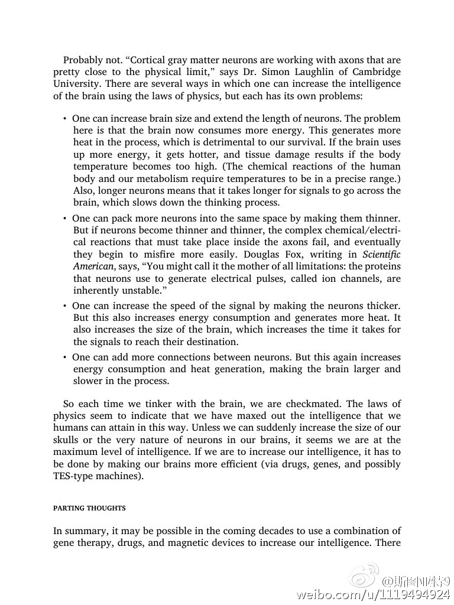

看共和党辩论，Ted Cruz和Mark Rubio死磕，大概显示出这两人认为候选人最终是他们两人的战场。Cruz代表激进保守派，算是道貌岸然版的特朗普，他应该认为可以最终吸收特朗普所有支持者；Rubio代表主流保守派，可能认为他将最终吸收多数其他候选人的选票。如果是这样的话，仗会一直打到两派只剩一个人。

斯图亚特9
2015-12-22
斯图亚特9
2015-12-22
人的记忆除了暂时记忆、短时记忆、长期记忆之外，一定也有一些冷记忆的，因为对于现在没有用暂时用节省能量喝空间的方法封存起来（就像计算机领域的冷存储），只有需要的时候在睡眠整理记忆的时候把一些片段学会长期记忆。要不然为什么一些老人会经历几十年都不记得的事情突然历历在目的情况？
斯图亚特9
2015-12-22
这本书说人的智商过去几千年都没有进化是因为遇到了物理的瓶颈，就好像现在的CPU技术一样——增加神经数量或增加神经大小会使得耗费能量过多造成过热损害人脑，增加人脑大小使得神经过长而降低处理速度，缩小神经大小会遇到量子漂移使错误增加。感觉和现在CPU摩尔定律的终结一个样啊……
- 